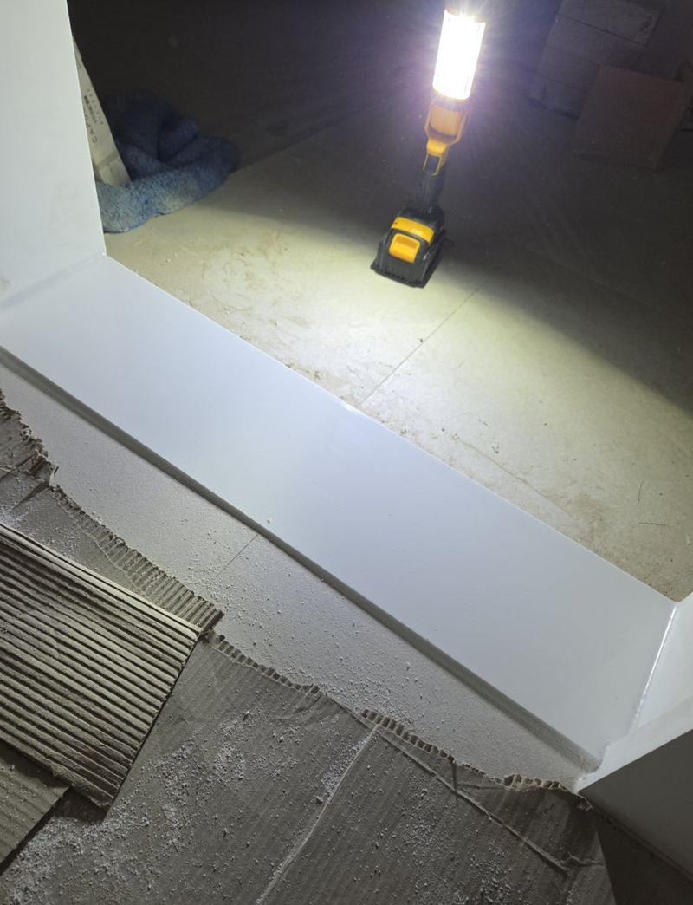
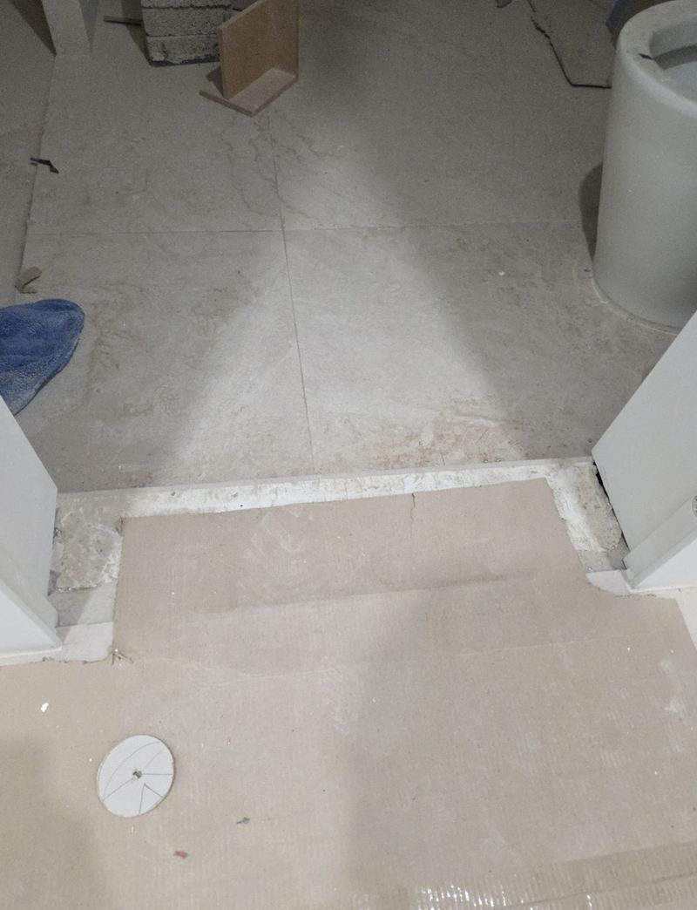
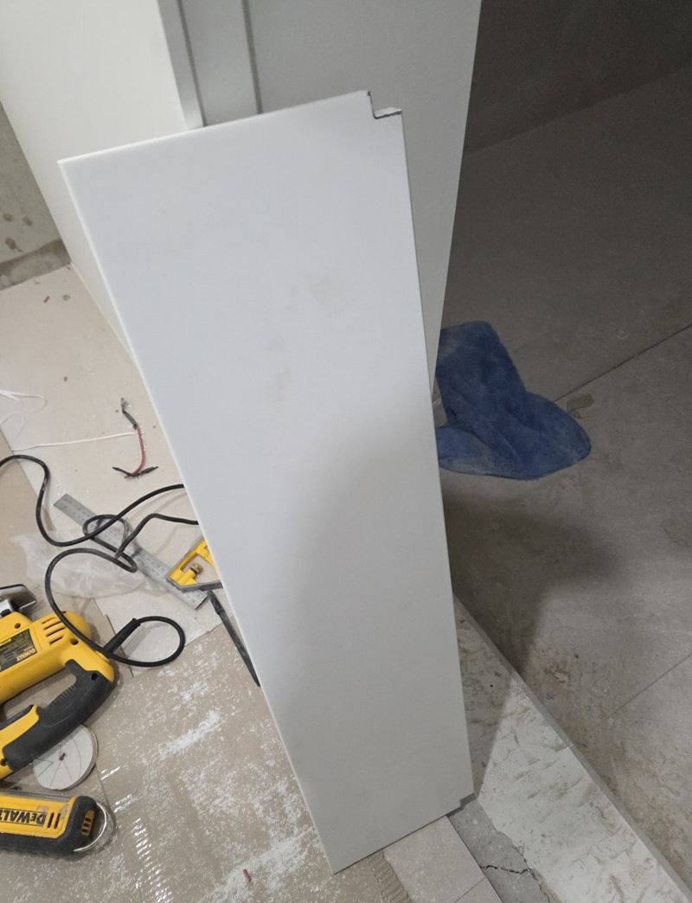
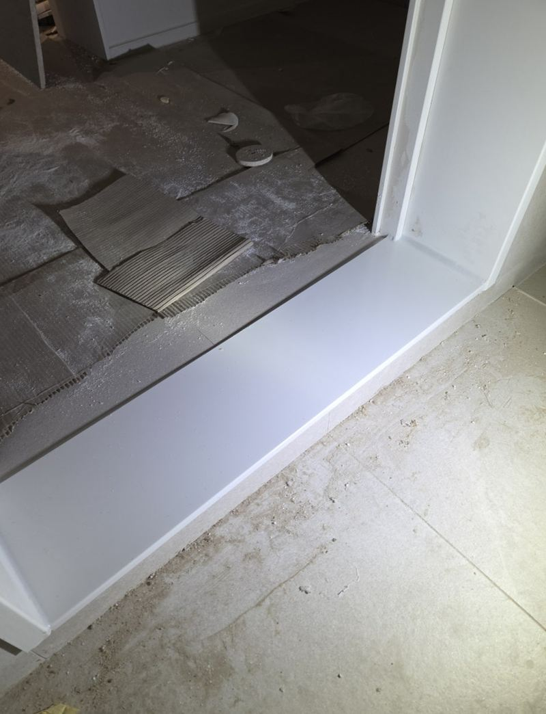
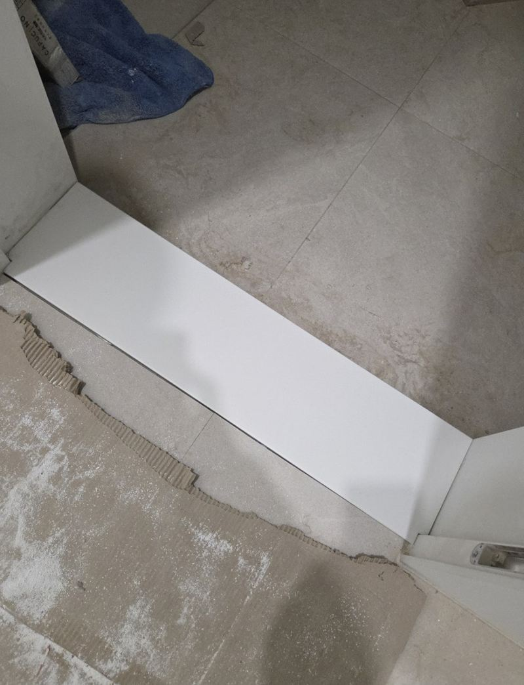
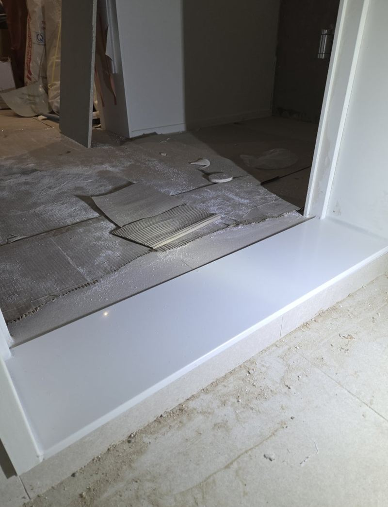

용인 기흥 욕실 문턱 문지방 맞춤 시공 비용
← 밀어서 전후 비교 →
이사 전에 집을 손보던 용인 기흥 보정동 아파트였어요. 욕실 공사를 하면서 문턱 자리도 새로 하고 싶은데, 튼튼하면서 흰 문과 어울리게 해 달라는 요청이었어요. 기존 문턱을 걷어 낸 자리는 콘크리트 면이 울퉁불퉁하고 높이도 제각각이었어요. 하부 면을 먼저 정리해 높이를 맞추고, 흰색 인조대리석을 현장에서 재단해 앉힌 뒤 실리콘으로 마감했어요.
| 현장 | 용인 기흥구 보정동 아파트 욕실 출입구 |
|---|---|
| 요청 | 튼튼하고 문 색과 어울리는 흰색 문지방 |
| 한 일 | 문 크기·문틀·바닥 높이 실측 → 인조대리석 현장 재단 → 하부 면 정리·높이 맞춤 → 부착 → 수평 확인 → 실리콘 마감 |
| 자재 | 화이트 계열 인조대리석 |
하부부터 정리해야 하는 이유
욕실 출입구는 물이 자주 닿고, 드나들 때마다 발로 밟는 자리예요. 아래가 고르지 않은 채로 문지방을 덮어 올리면 빈 곳이 생겨, 밟을 때마다 조금씩 움직이다 금이 가거나 들떠요. 이 집도 기존 마감을 걷어 낸 바닥이 군데군데 패여 있어서 그대로 붙일 수 없었어요.


그래서 문 크기, 문틀 구조, 욕실과 거실 쪽 바닥 높이를 하나씩 잰 뒤 어떤 높이로 올릴지부터 정했어요. 문지방이 너무 높으면 걸려 넘어지고, 낮으면 욕실 물이 밖으로 넘어와요.
인조대리석 문지방 맞춰 자르기
문지방은 공장에서 완성품으로 들고 오는 게 아니라, 현장 문틀에 맞춰 잘라야 해요. 인조대리석은 각도나 길이가 1~2mm만 어긋나도 문틀과 만나는 자리에 틈이 보여요. 컷쏘와 그라인더로 길이와 모서리를 맞춰 가며 여러 번 대 보고 다듬었어요.


높이 맞추기
하부 면을 정리하고 문지방이 앉을 높이를 고르게 잡았어요.
부착과 수평
문지방을 붙인 뒤 수평계로 여러 번 확인했어요. 밟는 자리라 조금만 기울어도 삐걱대요.

실리콘 마감
문틀과 바닥이 만나는 선을 실리콘으로 막아 물이 스미지 않게 했어요. 흔들림이 없는지 밟아 보고 마무리했어요.

욕실 문턱 시공 비용이 달라지는 것
| 항목 | 확인하는 것 |
|---|---|
| 하부 상태 | 정리와 높이 맞춤이 얼마나 필요한지 |
| 문 폭과 개수 | 욕실 한 곳인지, 다른 방도 함께인지 |
| 자재 | 인조대리석·천연석 등 재질과 색 |
| 기존 문턱 철거 | 나무·타일 문턱을 걷어 내야 하는지 |
공사 중인 집이라 다른 공정과 겹치지 않게 일정을 맞추는 것도 중요해요. 바닥 공사가 끝난 뒤, 실리콘 마감 전에 들어가면 깔끔하게 이어져요.
욕실 문턱, 이럴 때 바꿔요
- 문턱 모서리가 깨졌어요깨진 틈으로 물이 들어가 아래가 더 상해요.
- 밟으면 덜컹거려요하부가 비어 있다는 신호예요.
- 나무 문턱이 검게 변했어요물을 먹어 썩고 있는 경우가 많아요.
- 리모델링 중이에요욕실 공사와 함께 하면 마감선이 자연스러워요.
문턱 공사 때 같이 보면 좋은 곳
- 욕실 문 하단문턱 높이가 바뀌면 문 아래가 닿는지 함께 봐요.
- 문틀 아래 끝물에 젖어 들뜬 문틀 끝은 같이 손보는 게 좋아요.
욕실 문턱 질문
문턱을 낮출 수 있나요?
욕실 바닥 물매와 배수를 보고 가능한 만큼 낮춰요. 너무 낮추면 물이 넘어올 수 있어요.
천연 대리석과 인조대리석 중 뭐가 좋아요?
인조대리석은 색이 고르고 다루기 쉬워요. 천연석은 무늬가 자연스럽지만 얼룩에 신경을 써야 해요.
문 색과 어떻게 맞추나요?
흰 문이면 화이트 계열, 우드 문이면 베이지·그레이 계열을 많이 골라요.
타일 공사 전에 해야 하나요?
바닥 타일이 끝난 뒤 높이에 맞춰 하는 게 정확해요.
실리콘은 얼마나 지나야 물을 써도 되나요?
마를 때까지는 물을 피해 주세요. 작업 후 시간을 알려 드려요.
베란다 문턱도 하나요?
베란다, 현관 중문 아래 문턱도 같은 방식으로 맞춰요.
기존 문턱에 덧붙이면 안 되나요?
높이가 더 올라가고 아래 빈 곳이 남아요. 걷어 내고 새로 앉히는 게 오래가요.
다른 문지방·문턱 현장
문턱 자리를 위에서, 욕실 쪽 바닥과 함께 찍어 보내 주세요.
전화 상담 010-4517-9872